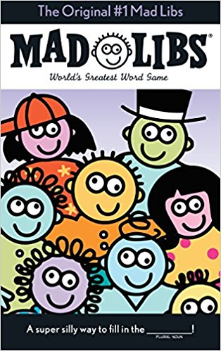

Mad Libs, created in 1953, is a phrasal template word game where one player prompts others for a list of words to substitute for blanks in a story, before reading the often comical or nonsensical story aloud.
The blanks are usually subsituted by words with different parts of speech. For example, there can be verbs, adjectives, or any other parts of speech to replace the blanks.
